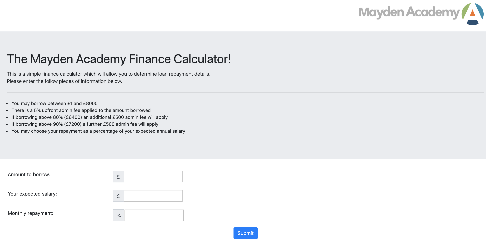
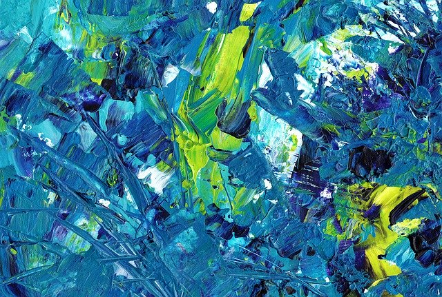
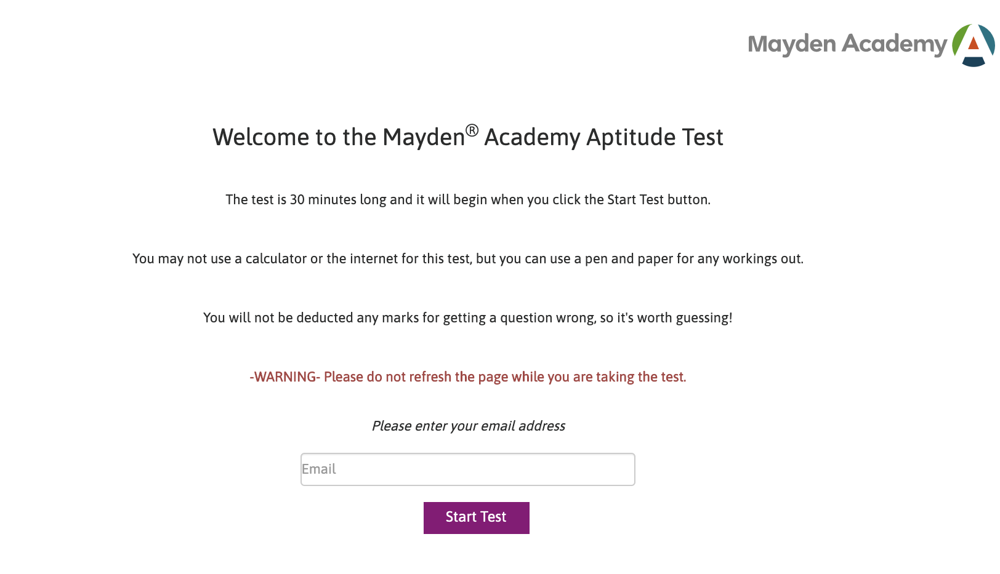
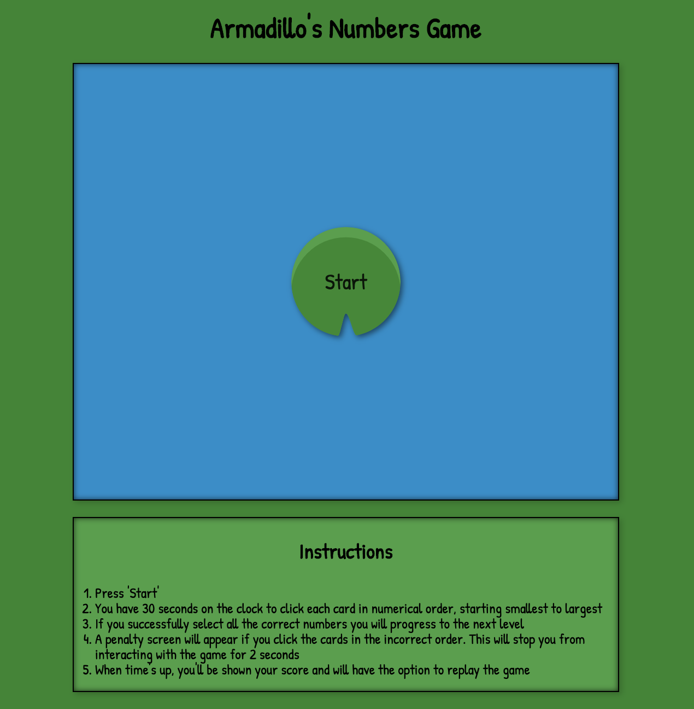

Cartoon Collection App.
An individual project written in PHP and SQL.

Mayden Academy Finance Calculator.
An individual project written in Javascript.
Demo
An individual project written in Javascript.

Armadillo Estates - created using OOP and written in Javascript.
With a styling nod to PHP.net!
Demo
With a styling nod to PHP.net!

Academy Aptitude Test. Added features to an existing codebase.
Compiled using Gulp and written in Javascript.
Demo
Compiled using Gulp and written in Javascript.
To Do List. An individual project using Slim (PHP MVC Framework) & MySQl database.
Demo

Armadillo's Brain Training Numbers Game.
Written in Javascript and a nod to Flexbox Froggy.
Demo
Written in Javascript and a nod to Flexbox Froggy.